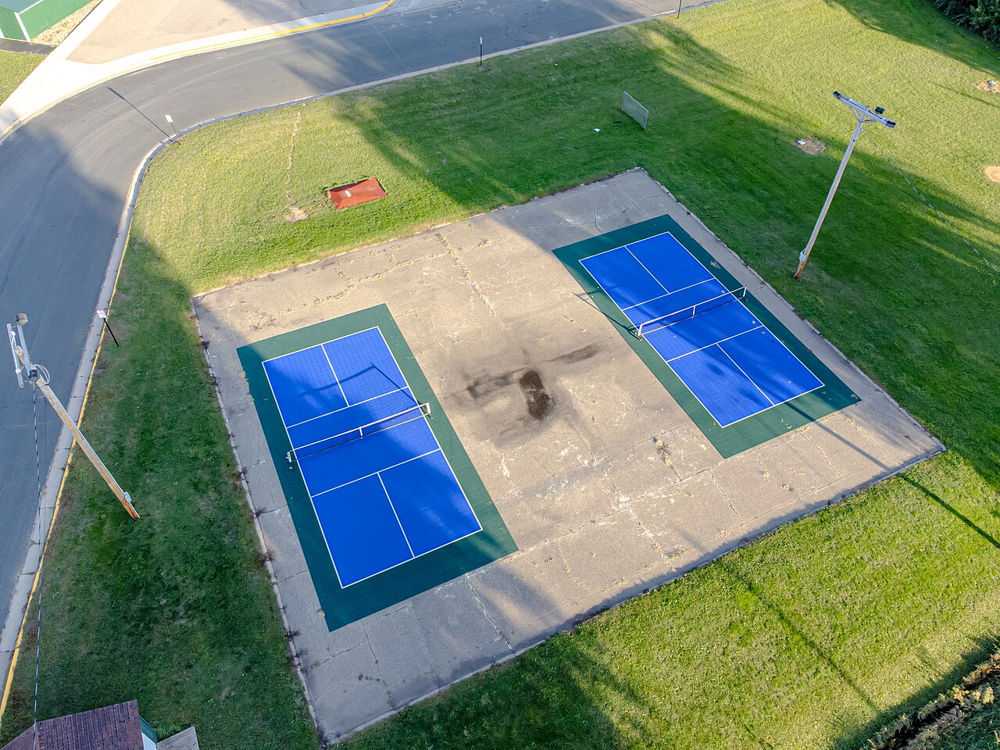
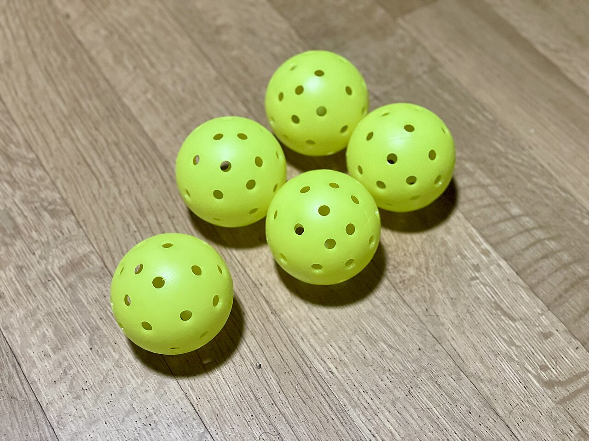
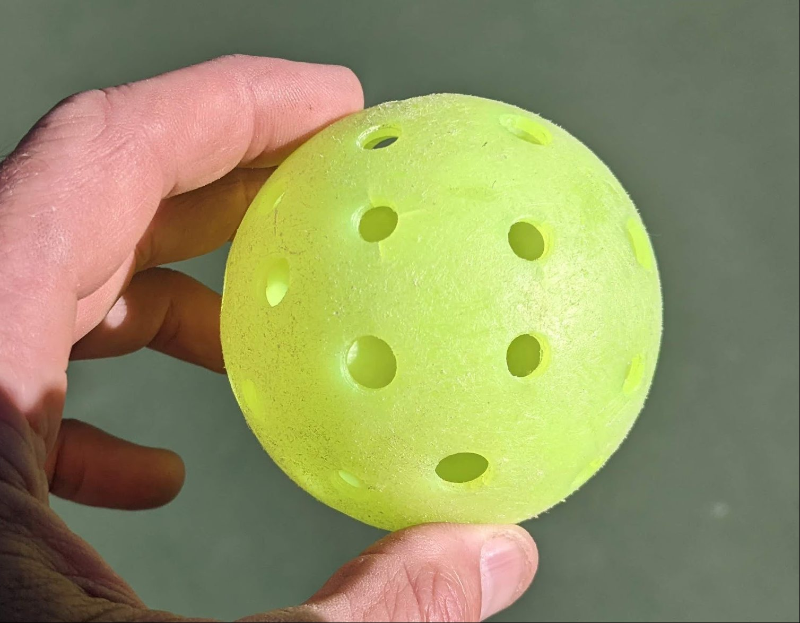

Gate Review 1 · Customer & Market Research
Customers & Benefits
Frequent, competitive players lose points to balls that have gone soft or cracked before anyone can tell. This page describes who they are, where the problem happens in their session, and what a product would have to give them to be worth carrying to the court.
The problem, from the court
A competitive player arrives for a league night or a tournament expecting to think about strategy, not equipment. Before the first game they pick a ball from their bag, bounce it and squeeze it. The check takes about three seconds (P3, a tournament player) [2], and most players do not trust it: 52.8% of survey respondents rate their confidence at 3 or lower out of 7 (n=36) [1]. Then, mid-game, a ball that looked fine skids or bounces low, and the rally is decided by the ball rather than the players. Nearly three in four respondents (72.2%, n=36) have played with a cracked ball [1], and the frustration named most often is that damage is difficult to see (46.7% of the 15 respondents who received that question) [1].
The damage is hidden for a physical reason. In Pickleball Science's play test of Franklin X-40 balls, stiffness fell about 10% per hour of competitive play, and by three hours the balls had soft spots, all before any crack appeared [14]. A player therefore keeps using a ball that already plays differently and only retires it once the damage is obvious.
This matters most to the players who care most about the game. Competition is the top reason respondents play (48.5% rank it first, n=33), and consistent performance is their top equipment criterion (52.8%, n=36) [1]. An unpredictable ball undermines both. The rest of this page therefore treats the benefit as earlier detection of hidden softening, leading to consistent play and confidence in the ball, rather than damage detection for its own sake. Interview participants are identified as P1–P4; their roles, the survey sample and the reasons some questions have fewer than 36 answers are set out under Evidence base and sample limits at the end of the page.
Customers, users and stakeholders
The primary customer and user is the individual frequent, competitive player: someone who plays at least weekly, takes part in league, rated or tournament play, brings their own balls, and checks them personally at the court before play or between games. This player both feels the failure and buys the balls, so user and purchaser are the same person. The survey supports the frequency and ownership parts of this definition: 47.2% play weekly or more (n=36), half bring their own balls at least some of the time (n=36), and frequent players are the most interested in an objective test (64.7% of the 17 frequent players against 47.4% of the 19 occasional players) [1]. The survey did not ask whether respondents play in leagues, rated events or tournaments, so the competitive part rests on competition being the top reason to play (48.5%, n=33) [1] and on P3, a ranked tournament player, who expected “diehard pickleballers” to buy one [2] Interpretation.
Facilities (clubs, indoor venues and tournament directors) are a possible secondary segment and an unvalidated hypothesis. They supply and retire shared balls, and the casual players we interviewed preferred that route:
“I don't think I would purchase something to determine whether or not it's good… when [P2] goes and plays at the club, they give her the balls.”P1, recreational player [2]
“I don't know that I would buy a device for that, but maybe if it was something at the club where you could just like throw the balls in and it would shoot out the ones that were good… That could be kind of cool.”P2, frequent player and facility co-owner [2]
The one facility owner we interviewed challenges that case directly. P4's venues do not inspect balls, because “it's pretty obvious when a ball has had it”; broken balls are thrown away, and “equipment is kind of the least of my problems” [2]. Facilities remain a possible secondary purchaser because they own shared inventory, but their need is unproven, and unattended screening of a venue's ball supply would require a different product. The product is therefore defined for the individual player's personal use at the court. Figure 1 and Table 1 set out each role.
| Role | Who | What they want most | Source |
|---|---|---|---|
| Primary customer and user | The individual frequent, competitive player: plays at least weekly and takes part in league, rated or tournament play. Buys and carries their own balls (50% of respondents bring their own at least some of the time, n=36 [1]) and checks them personally at the court, before play or between games | Every ball in play behaves like a good ball; a result they trust more than the hand check, quick enough to fit before play or between games | Survey [1], interviews [2], journey map [3] |
| Possible secondary purchaser (unvalidated) | Facilities: clubs, indoor venues and tournament directors. Venues stock balls in caddies for self-serve play, often with no staff present (P4). A tournament director must choose the ball from the approved list (Rule 16.G) [6]. The one owner interviewed sees no need (P4) | A consistent way to retire balls; no slowed play; a competitive price | Interviews [2], QFD [4], rulebook [6] |
| Producer and seller | A new product line within an existing sports-equipment company and its contract manufacturers, selling through sporting-goods retailers, online stores, club pro shops | Buildable at a competitive price; long-lasting; easy to explain | QFD [4]; Interpretation |
| Other stakeholders | Opponents and partners; USA Pickleball (ball standards and approved list [5][7]); ball manufacturers; the environment | No long wait while a ball is checked; consistent balls on both sides; no implied certification; less plastic waste | QFD [4], rulebook [6] |
Table 1. Stakeholder roles and priorities. The player sits at the top because the player both feels the failure and pays for the balls; the other roles shape constraints rather than define the product. The QFD weights each customer need separately for players, court owners and tournament organizers, manufacturers, and other players (see the House of Quality) [4].
Primary user profile
The survey describes the player the team could reach rather than the full target segment. Respondents skew young and university-affiliated: 80.6% are 18–24 (n=36). Most have played for one to three years (69.7%) or longer (15.2%) (n=33), 47.2% play weekly or more (n=36), and 58.3% play mainly outdoors (Figure 2) [1]. The survey did not ask occupation, income or family status; the age skew and university distribution suggest most respondents are students Interpretation. The interviews broaden the picture with an elementary-school teacher who plays with family (P1), a retired frequent player (P2), and a young, formerly college-competitive player who enters ranked tournaments (P3). P4 describes his venues' users as aged “8 to 80,” from first-timers to rated players who play “five times a week” [2]. Nationally, 24.3 million Americans played in 2025, 7.5 million of them CORE players (eight or more times a year), and ages 13–24 have the highest participation rate of any age group, according to the SFIA 2026 Pickleball Single Sport Report [8]. The young sample is therefore a real part of the market, but the target segment also includes older league and tournament regulars, such as P4's rated players, whom the survey under-represents.
Persona. The primary user is a composite of the modal respondent and the frequent-player subgroup: Maya, 21, a university student who plays four times a week, outdoors, in sessions of up to two hours, who plays mainly to compete and brings her own balls about half the time Composite. Maya stands for the part of the segment the survey reached; P3's tournament habits and P4's rated regulars show the same needs in older and more formally competitive players. Table 2 profiles this user beyond demographics.
| Attribute | Finding | Source |
|---|---|---|
| Values and priorities | Performance first. 52.8% rank consistent performance as their top equipment criterion (n=36), against 16.7% for price and 13.9% each for durability and long life. Easy identification of damage comes last (2.8%, n=36), and among the 18 respondents who ranked all five characteristics it has the worst mean rank (4.78 of 5). Players value how a ball plays, not inspection for its own sake. | Survey [1] |
| Goals and motivations | To compete and win. Competition is ranked first by 48.5% (n=33), ahead of improving skill (24.2%) and exercise (18.2%); teamwork is last (Figure 3). These players keep score, so a bad ball costs them points. | Survey [1] |
| Habits and behaviors | They check balls by hand: of the 16 respondents asked, 68.8% look, 62.5% compare bounce and 43.8% hit the ball to feel it. P3 slaps the ball against the floor and says she can usually tell “within 3 seconds.” P1 keeps an unlabeled “hodgepodge” of balls in one bag; P2's club players write their names on their balls. | Survey [1], interviews [2] |
| Social and cultural context | Doubles on shared courts with pooled balls. Clubs supply balls for open play; players bring their own for rented courts; public parks supply none. Under Rule 10.G a damaged ball is replaced only if all players agree [6], so a long check during play makes three other people wait. Players are attached to how a ball looks and plays: P1 wants only fluorescent yellow. | Interviews [2], rulebook [6] |
| Functional needs | Know before play, or between games, whether each ball still plays like a good ball, which the USA Pickleball Equipment Standards Manual defines as a 30–34 in. rebound from a 78 in. drop [5]. The check must need no special skill or sharp eyesight, run on battery power at courts without outlets, and take no more than about 30 s per ball. The solution must not change how a good ball plays: P2, P3 and P4 all note that the more crack-resistant “Lifetime” ball plays differently. | Standard [5], interviews [2] |
| Emotional tensions | The top frustration is that damage is hard to see (46.7%, n=15), then “is it the ball or me?” (33.3%, n=15) (Figure 4). The journey map's low point is a mid-rally failure and a replayed point [3]. Context matters: P2 said a break “in the last point” of a tournament “could be annoying,” and P3 is “pretty mad” with no replacement ball. | Survey [1], interviews [2], journey map [3] |
| Aspirations | To stop thinking about equipment so attention stays on the game. Frequent players are both more confident (58.8% of n=17 vs 26.3% of n=19 occasional players) and more interested in an objective test (64.7% vs 47.4%). They want their judgment confirmed, not replaced. | Survey [1] |
Table 2. Primary user profile. Every percentage carries its own base (n); the reasons some bases are below 36 are given under Evidence base and sample limits. Taken together, the profile describes a player who already cares about how the ball plays, already checks it, and does not trust the check.
Use environment and customer journey
The product will be used where the player plays, and for most respondents that is outdoors (58.3%, n=36) [1]: dedicated or shared tennis courts exposed to sun, cold and rough surfaces, with no storage and usually no wall outlet (Figure 5). Anything the player uses there has to fit in a bag and run on battery power. Breakage depends on level and ball: P2 sees a cracked ball “probably every other time I play,” and P3 goes through about one ball per session at a high level [2].
Indoor venues add a second setting. P4 describes former warehouses and big-box stores kept at a constant 65°F and run without staff for up to about 21 hours a day. A four-court facility “could easily go through 200, 300 balls a month,” balls “crack more quickly if it's cold,” and rough concrete or asphalt wears them faster [2]. These conditions shape how fast balls fail for every player. They would matter for a facility product only if the secondary segment is validated; the product defined here is carried and used by the player.





Journey map
The team's journey map follows one session from the player's point of view [3]. Target customer: a frequent, competitive player. Goal: play a tournament or league session without a ball failure deciding a point. Context: a league, club or tournament court, indoors or outdoors, with balls from the player's own bag or supplied by the club. Beginning and end: the journey starts when the player arrives to play and ends with the post-game review of what failed (Figure 8).
The map shows that the problem is felt in one place and solvable in another. The failure happens mid-rally, where nothing can be done without stopping play, so the product has to act earlier, at the moment the player picks a ball. The touchpoints and emotions around that moment set the conditions the product must meet.
Touchpoints. Products: the ball, the player's own bag of balls and, at clubs, the ball caddy. People: partner, opponents and, in sanctioned play, the referee, who must agree to or rule on a swap (Rules 10.G, 20.F) [6]. Information: the rulebook and word of mouth. Environment: court surface and temperature, which change how fast balls fail [2]. Services: club-supplied balls for open play, court booking, and often no staff on site [2].
Why the customer feels this way. The positive start reflects that players expect not to think about equipment. The neutral selection step reflects low confidence: 52.8% rate their judgment at 3 or below of 7 (n=36) [1]. The negative mid-game step is the failure itself: 72.2% have played with a cracked ball (n=36) [1]. The recovery afterwards reflects how little one ball costs: “if I lose 10 balls a day, I don't really care” (P4) [2]. That recovery is why a product cannot sell on saving balls; it has to sell on the game that was lost to a bad one.
| Unmet need | Where in the journey | Evidence |
|---|---|---|
| Nuisance | Choosing a ball: good and bad balls look alike (Figures 6 and 7) | 46.7% say damage is hard to see (n=15); 72.2% have played with a cracked ball, 36.1% with a soft one (n=36) [1]; stiffness falls about 10% per hour of play before any crack [14] |
| Failure | Mid-rally: the ball cracks, softens or bounces wrong | P2: a crack about every other session; P3: about one ball per session [2] |
| Workaround | Before and between games | Look, bounce, hit, or slap it against the floor (n=16) [1]; about 3 s per ball, but 52.8% have low confidence in the result (n=36) [1][2] |
| Excess effort | Checking a bag or caddy of balls one by one | Journey map [3]; clubs supply pooled balls [2] |
| Fairness | A soft ball cannot be proven soft, so the point stands | Rule 10.G.2 of the USA Pickleball Official Rulebook: no replay for a soft or degraded ball [6] |
| Waste and cost | After play: guessing what to discard | 26.7% do not know when to replace and 26.7% dislike discarding usable gear (both n=15) [1]; P4 discards 200–300 balls a month [2] |
| Safety | Not a primary ball concern | Emergency-department injuries are mainly strains, sprains, fractures and falls [9][10]; P2 notes players wear eye protection against fast balls; P4's safety concern is a roof leak making a court slippery [2] |
Table 3. Where the current journey fails the user. The nuisance, the failure and the unfair outcome all trace back to the same gap: at the moment of choosing a ball, the player cannot see softening that already affects play.
From journey to customer needs. Each failure point becomes one of the customer needs on the Product Definition page. The hidden softening at ball selection becomes Identifies low-performance balls, measured as agreement with the USA Pickleball drop test. The low confidence at the same step becomes Increases confidence in quality, measured as the gain in users' self-rated confidence. Fitting the check into the time before play or between games becomes Tests quickly, measured as time to test a ball [4]. Targets for each are in the product characteristics and targets.
Priority customer benefits
The evidence points to one value story. Balls soften and crack before players can tell, and play suffers until the damage is obvious. A product that detects hidden softening earlier, gives the player more confidence than the hand check, and does so in a portable form at the court would give competitive players what they already buy equipment for: a ball that plays consistently. Table 4 sets out the three benefits that make up this story, in order of priority, followed by the unvalidated facility benefit. Each is stated as an outcome, leaving room for concept generation.
| Benefit | Why it is valuable | How it improves today | Why it could drive adoption |
|---|---|---|---|
| 1. Hidden softening is caught before it costs points | Consistent performance is the top equipment criterion (52.8%, n=36) and competition the top reason to play (48.5%, n=33) [1]. Balls lose about 10% of their stiffness per hour of play before any crack shows [14] | Balls below the bounce standard [5] come out before play or between games instead of failing mid-rally, where a soft ball earns no replay [6] | It delivers consistent play, which players already buy equipment for; inspection for its own sake ranks last (2.8%, n=36) [1] |
| 2. More confidence in the ball than the hand check gives | 52.8% rate their confidence in judging a ball at 3 or below of 7 (n=36), and 33.3% cannot tell the ball from their own play (n=15) [1] | A result tied to how the ball plays replaces a guess, and confirms an experienced player's judgment rather than overriding it | 55.6% find an objective test useful (n=36), rising to 64.7% of frequent players (n=17) against 47.4% of occasional players (n=19) [1] |
| 3. A portable check at the court | The benchmarked laboratory and manufacturer testing instruments are bench machines costing $2,900–$4,995 (see Competition Analysis) [4], and the hand check is portable but untrusted. Most play is outdoors, usually without a wall outlet (58.3%, n=36) [1] | A battery-powered check that travels in the player's bag and gives a keep-or-retire answer in 30 s or less per ball | It is the only way to get a measured result where the ball is chosen Interpretation; whether players will carry it and pay for it is untested |
| 4. Facilities retire balls on evidence (possible secondary segment; unvalidated) | Facilities supply and replace balls repeatedly; casual players P1 and P2 preferred a tester at the club [2] | Dead balls leave play and usable ones stay in | Challenged by the evidence: P4 pays about $1.62 a ball and does not inspect them [2], so any facility value would have to come from consistent play for members, not ball savings |
Table 4. Priority customer benefits. Benefits 1 and 2 carry the purchase case; benefit 3 is what distinguishes the product from laboratory equipment. A shared reading might also help players agree on whether to swap a ball, but that is a possible secondary benefit only: the research did not test it as a reason to buy.
Why a 30-second check is acceptable when the hand check takes 3 seconds
Today's check is fast. P3 can usually tell “within 3 seconds” [2]. Speed is not the problem; trust is: 52.8% of respondents rate their confidence in that check at 3 or below of 7 (n=36) [1], and it cannot detect softening that has not yet cracked the ball [14]. The target is therefore 30 s or less per ball (Product Definition) [4]. Because the check happens before play or between games rather than mid-rally, a player can trade a little time for a result they trust Interpretation. Whether players accept that trade, and at what point extra seconds outweigh extra confidence, is to be tested in user evaluation.
Only 2.8% rank easy damage identification first (n=36) [1]. P3 cautioned that “life left in a ball is subjective”: it depends on who is playing, and professionals mostly use new balls [2]. A useful reading must connect to how the ball plays, such as bounce against the published standard [5], rather than to cosmetic wear. P3's own suggestion, a ball that “changes color when it cracks,” shows that a simple signal would be welcome [2].
Contextual considerations
Beyond the player's own experience, the product sits inside a sport with rules, a business that has to make money, and a plastic ball that ends up in landfill. All ten factors in Table 5 apply to some degree. For each, the table states what is known, what is still uncertain, and how the uncertainty could change the product definition.
| Factor | How it applies | Uncertainty and effect on the definition |
|---|---|---|
| User experience | Used courtside, often one-handed, before play or between games, by players aged from under 18 to 64 in our sample (n=36) [1] and “8 to 80” at P4's venues [2]. The result must not rely on fine vision, dexterity or color perception. | No player has used a prototype. If older players or those with limited dexterity struggle, the number of user actions and the form of the result would need to change. Usability testing across age groups is required. |
| Business / economic | The individual player is the purchaser. The team's target is a retail price of $100 or less; the producer constraints are a $400 prototype budget and a product buildable in the course this semester (see Product Definition). Benchmarked testing instruments cost $2,900–$4,995 [4]. For the possible facility segment, P4's four-court venue uses 200–300 balls a month at about $1.62 each, roughly $324–$486 a month (team calculation) [2]. | Willingness to pay is unmeasured: the survey asked how useful a test would be, not what players would pay. If competitive players will not pay about $100, the price target, and with it the feasible technology, must change. |
| Social | Pickleball is mostly doubles on shared courts. A long check makes partners and opponents wait, and under Rule 10.G a ball is swapped only if all players agree [6]. | Whether a measured reading would make agreeing on a swap easier is untested. It is treated as a possible secondary benefit, not a purchase driver, so it does not set any requirement. |
| Ecosystem / environment | Balls are molded low-density polyethylene (LDPE, resin code 4), and most broken balls end up in landfill because they are rarely marked for recycling [12]. P4 discards 200–300 a month at one venue [2]. The device's own battery and materials add to end-of-life impact. | The net effect on waste is unknown: catching soft balls may raise discard rates, while clearing good balls may lower them (26.7% dislike discarding usable gear, n=15 [1]). If testing shows the product mainly increases discards, the environmental claim must be dropped. |
| Regulatory | Ball designs must be approved under the USA Pickleball Equipment Standards Manual (Rule 3.C.2), and tournament balls must come from the USA Pickleball approved-ball list (Rule 16.G) [6], which lists 393 balls [7]. The manual sets bounce, compression, size and weight for new balls (hardness is now recorded only) [5]. | No standard defines when a ball in service is worn out (Rules 10.G, 20.F) [6], so the team must choose a pass/fail threshold, and the product must not imply certification. If USA Pickleball later defines an in-service limit, the threshold should follow it. |
| Professional | Designed in a university analytical product-design course: claims must trace to evidence, and participant data stays anonymized and off this public site. Within the sport, P3 notes that professionals mostly play with new balls [2]. | Whether referees and tournament directors would accept a reading during sanctioned play is unknown. The product is defined for the player's own use, so official acceptance is not required, but it would affect any later tournament use. |
| Personal value | Team members play, and the nuisance was observed first-hand before it was researched. For the customer, the personal value is confidence and the satisfaction of a game decided by skill. | The team's own experience may overstate the pain; P4's view that ball condition is obvious is the main counter-evidence [2]. Targeted research with league, rated and tournament players is needed to confirm the pain is strong enough to buy for. |
| Global | The International and World Pickleball Federations voted in 2025 to merge and pursue Olympic recognition [11], so the sport and its ball standards are internationalizing. | Standards outside the US were not researched. Running on batteries rather than mains power, and not depending on an app or subscription, keeps the product usable abroad; the pass/fail threshold may need to be adjustable if other bodies set different bounce limits. |
| Public health, safety and welfare | Ball condition is mainly a fairness issue, not an injury cause. Emergency-department injuries are dominated by strains, sprains and fractures in players over 50, according to Forrester's study of pickleball injuries in emergency departments [9], most often in players aged 60–79 [10]. | No link between ball condition and injury was found, so safety does not drive the product. The device itself must avoid pinch points, sharp edges and battery hazards, and be usable by older players. |
| Cultural | The culture is casual and social: P2 chose the sport for open play [2]. Players are attached to how balls look and play (P1 wants only fluorescent yellow). Anything that looks like lab equipment may be rejected, which is why Aesthetically pleasing is one of the eleven customer needs [4]. | Whether competitive players see a tester as serious kit or as fussiness is unknown. Aesthetic approval is set as a target to be tested with players. |
Table 5. Contextual considerations. The largest uncertainties are economic (willingness to pay) and regulatory (no in-service wear limit); both have to be resolved before the pass/fail threshold and price target can be fixed.
Hypotheses still to validate
The customer definition above rests on customer reports. Before Gate Review 2 it needs targeted research with the competitive segment and objective performance evidence, organized around four hypotheses.
- We hypothesize that frequent, competitive players across age groups (weekly or more; league, rated or tournament play) will pay about $100 for their own courtside ball check because a soft ball costs them points. This can be validated by a survey with a willingness-to-pay question, distributed through leagues, rated events and tournaments rather than personal networks.
- We hypothesize that players misjudge balls that have softened but not cracked. This can be validated by drop-testing used balls against the 78 in./30–34 in. reference [5] and comparing the results with players' own keep-or-retire judgments.
- We hypothesize that players will accept up to 30 s per ball before play or between games in exchange for a result they trust more than the hand check. This can be validated by user evaluation of a prototype that records time per test and self-rated confidence before and after.
- We hypothesize that club and tournament operators running rated or competitive programs may form a secondary segment because consistent balls matter more to those members. This can be validated by interviews with more operators and tournament directors. (P4 runs mixed programs and saw no need.)
Evidence base and sample limits
This page draws on a consumer survey (36 responses to the final form plus 4 pilot responses) [1], four semi-structured interviews [2], the team's customer journey map [3], the team QFD [4], and published rules, standards and literature. Interview participants are identified by number only: P1 a recreational player, P2 a frequent player who co-owns an indoor facility, P3 a competitive tournament player, and P4 the owner of two indoor pickleball venues. Statements that are the team's interpretation rather than a documented finding carry the Interpretation tag. Full methods are on the Market Research page.
Why some results have fewer than 36 answers. Every survey percentage on this page is reported with its own base. The base is 36 unless stated otherwise, and the smaller bases have documented causes:
| Base | Questions | Reason |
|---|---|---|
| n=36 | Age, play frequency, play location, who provides balls, damage experienced, confidence (1–7), most important equipment characteristic, usefulness of an objective test | Answered by every respondent to the final form |
| n=17 / n=19 | Frequent-player (weekly or more) and occasional-player comparisons | The 36 respondents split by play frequency |
| n=33 | Reason for playing ranked first; years played | Three respondents did not answer; the survey record does not say why |
| n=18 | Mean rank of the five equipment characteristics | Only 18 respondents ranked all five characteristics; the first-choice shares use all 36 |
| n=16 | How players currently check a ball | Added to the form after it launched, so earlier respondents never saw it [1] |
| n=15 | Biggest frustration when judging equipment | Added to the form after it launched, so earlier respondents never saw it [1] |
Table 6. Survey bases used on this page. The questions on frustrations and current checks are the ones closest to the nuisance, and they have the smallest bases, so their percentages are indicative rather than conclusive.
Sample limits. Recruitment through the team's personal networks and the university pickleball club produced a sample that is 80.6% aged 18–24 and largely university-affiliated (n=36) [1]. Older players, league, rated and tournament players, and facility staff are under-represented, and the survey did not ask about league, rated or tournament participation directly. The four interviews add older and more competitive voices but are too few to generalize. These limits are why the primary segment is stated as a decision to be validated, not a measured result.
References
- [1] Team 1, “Activity 10a: Consumer Survey,” ME 455, University of Michigan, 2026. 40 responses (4 pilot, 36 final). Raw data held by the team; see Market Research.
- [2] Team 1, “Activity 10b: Consumer Interviews,” ME 455, 2026. Four semi-structured interviews (P1–P4). P1, P2 and P4 from transcripts; P3 from typed notes. Participants identified by number only.
- [3] Team 1, “Activity 11: Customer Journey Map,” ME 455, 2026.
- [4] Team 1, QFD workbook and submission, ME 455, 2026. See House of Quality.
- [5] USA Pickleball, Equipment Standards Manual, Jan. 2025. usapickleball.org
- [6] USA Pickleball, 2026 Official Rulebook, Rules 3.C, 10.G, 16.G and 20.F. usapickleball.org
- [7] USA Pickleball, “Approved Balls,” accessed Sep. 28, 2026. equipment.usapickleball.org
- [8] Sports & Fitness Industry Association, “SFIA Releases 2026 Pickleball Single Sport Report,” 2026. sfia.org
- [9] M. B. Forrester, “Pickleball-related injuries treated in emergency departments,” J. Emerg. Med., 58(2), 275–279, 2020. doi:10.1016/j.jemermed.2019.09.016
- [10] P. McMillan et al., “The epidemiology of pickleball injuries presenting to US emergency departments,” Sports Health, 18(4), 749–755, 2026. doi:10.1177/19417381251350671
- [11] “International Pickleball Federation,” Wikipedia, accessed Sep. 28, 2026. en.wikipedia.org
- [12] F. Cerabino, “Tough Breaks in the Life of a Pickleball,” The Pickler / Inside the Den, Sep. 18, 2023. insideden.com
- [13] PickleGeeks, “Best Cold Weather Pickleballs,” Jan. 28, 2024. Photo used with credit. picklegeeks.com
- [14] Pickleball Science, “How Many Games Will a Pickleball Last?” Mar. 15, 2023. Stiffness of Franklin X-40 balls measured after each hour of competitive play. pickleballscience.org